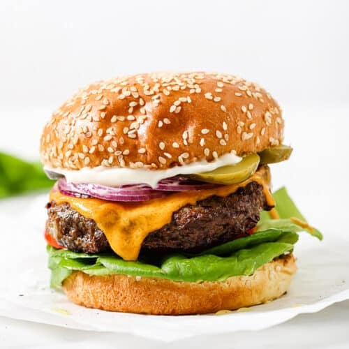

Home
Recipe for Hamburger

Description
Close your eyes, and picture the perfect hamburger.
Is it a thin diner-style hamburger patty, or a thick steakhouse-sized burger? Seared to the peak of juiciness on a grill or in a flat griddle? With or without cheese?!
It is a classic recipe for mouthwatering burgers that can be cooked on the grill, on the stovetop, as thick 1/3 pound patties, or as ultra-thin griddle patties.
Ingredients
- Ground chuck
- Crushed crackers or Panko bread crumbs
- Worcestershire sauce
- Egg
- Milk
- Seasonings
Steps
- First, set out a large mixing bowl and add in the ground beef, crushed crackers, egg, Worcestershire sauce, milk, and spices.
- Use your hands to combine until the mixture is thoroughly smooth.
- Next, press the meat down in the bowl into an even disk. Use a knife to cut and divide the hamburger patty mixture into 6 – 1/3 pound grill or skillet patties or 12 thin griddle patties.
- Set out a baking sheet lined with wax paper or foil to hold the patties. One at a time, gather the patty mix and press firmly into patties of your desired thickness. You typically want hamburger patties to be slightly larger than the buns they’ll be served on since they’ll shrink slightly during in the cooking process.
- Place the formed patties on the baking sheet. With thick patties, press an indentation in the center of each patty, so they don’t puff up while cooking.
- You can stack the patties with sheets of wax paper between layers if needed.
- Then, preheat the grill or a skillet to medium heat, approximately 350-400 degrees F. I love using a cast-iron skillet for getting that drool-worthy caramelized sear on the burgers.
- Ideally, you only want to flip your burgers once or twice during cooking.